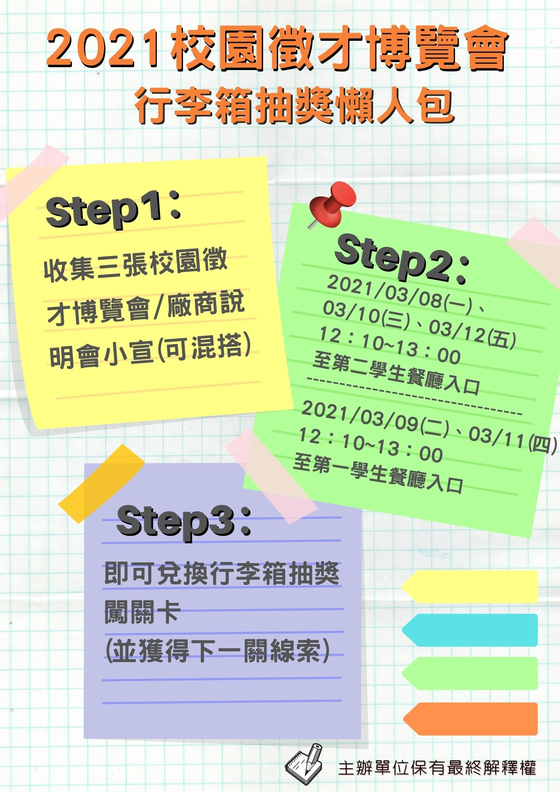
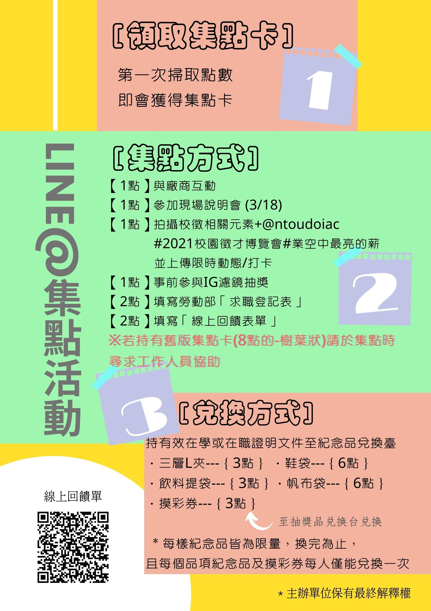
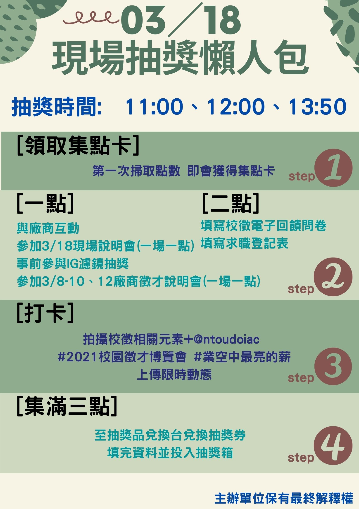

(一)追蹤海洋大學實習暨就業輔導組Instagram官方帳號【@ntoudoiac】。 |
|
|---|---|
第一關:集三張校園徵才博覽會A6宣傳單或徵才說明會A4宣傳單，(A4與A6宣傳單可隨機搭配，只要總數為3即符合資格)，並於3月8日至3月12日中午12點10分至下午1點，至海大實習暨就業輔導組的攤位兌換抽獎卷闖關卡，並蓋上第一關印章。 |
 |
(1)加入實習暨就業輔導組LINE@官方帳號【@qqm2895q】◆【1點】參加現場說明會參與校園徵才博覽會當天舉辦的現場說明會，結束後可至說明會攤位處集取乙點。 ◆【1點】於社群媒體上傳貼文或限時動態於個人Facebook或Instagram發表貼文或限時動態，內容須含: (1)任一與本次活動有關的視覺或文宣品，包含但不限於現場打卡板、背板、紀念品、廠商等。 (2)標記海大實就組IG帳號【@ntoudoiac】以及【#2021校園徵才博覽會】以及【#業空中最亮的薪】，於就博會當天(3/18)至紀念品兌換臺出示貼文或限時動態，經工作人員確認後，即可集取乙點。 (3)如事前已參與IG濾鏡抽獎活動，當天打卡仍會發送點數乙點。 ◆【1點】廠商徵才說明會 於2021年3/8(一)、3/9(二)、3/10(三)、3/12(五)的中午時段，參與廠商徵才說明會，並於說明會結束後掃描QRcode，即可集取乙點。 ◆【2點】填寫勞動部「求職登記表」 填覆勞動部「求職登記表」後至服務台經工作人員確認收回後，可集取兩點。 ◆【2點】填寫「電子回饋問卷」 填寫本次校徵回饋表單，完成後憑回饋表單頁面至服務台經工作人員確認後，可集取兩點。 |
 |
Step-1.於3月18日活動當天以本次徵才博覽會任一元素(視覺、Logo、文宣)上傳Instagram限時動態，@ntoudoiac及Hashtag『#2021校徵博覽會#業空中最亮的薪』。 |
 |